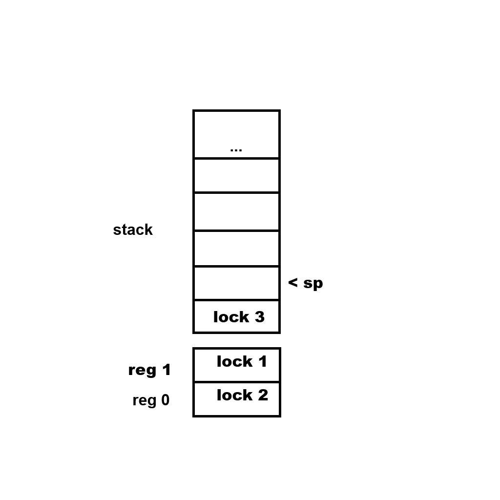

Overview
At the start you give a fixed memory cap number to base.init and this is the maximum amount of memory that your threads will be able to allocate.
You also give it a fixed readonly memory cap which is used to allocate a range of read-only memory, which will be accessible by all threads without the need for synchronization. The readonly memory must be initialized before you call base.start, and then base.start will hash it and in debug mode this hash will be used to verify the integrity of this read-only memory.
base.start will determine the optimal number of threads and create that many threads and call entry_point on all those threads including the main thread. Do not touch context.user_ptr, that’s where thread_data is stored, and it’s needed.
main :: proc() {
MEMORY_CAP :: 100000
READONLY_MEMORY_CAP :: 1000
base.init(MEMORY_CAP, READONLY_MEMORY_CAP)
// ...
base.start(entry_point) }
entry_point :: proc(thread_data: ^base.Thread_Data) {
// ...
return }
The basic premise of the multi-threading architecture is that the memory is split into cages, where each cage is an interval with a lock. Each thread has a keeper and a keeper can own no more than 2 cages at a time. To acquire a cage call base.acquire_cage and give it some point from the interval of that cage. If you attempt to acquire more than 2 cages, it will return false and an error will be printed. You can release a cage by base.acquire_cage with a pointer from the interval of that cage. The helper function keeper_swap_by_lock can be used to release one cage and acquire another in one sweeping motion.

The Lock System

Every thread is able to own at most 2 locks at a time. This is the bare minimum number of locks necessary for any algorithm. The containers for these two locks are called the lock registers. In addition, every thread has a lock stack. This allows for lock pairs to be managed in larger, nested scopes, as opposed to small disjoint scopes. If a procedure that has acquired lock A and B wants to call a procedure that depends on locks B and C, normally it would call a sync function to acquire lock C at the start and then call a sync function to release it at the end, but in my system, it can call a sync function at the start to acquire lock C and hint that lock A is no longer needed, and then call a sync function to release it at the end. And what happens in the background is, A is released and push into the lock stack, then B and C are acquired in order, and at the end C is released and A is popped from the stack and A and B are acquired in order. The stack is necessary so that the callee can remember what locks were owned by the caller and restore them.
Multi-Threading
For Willow’s thread synchronization to work without errors, your package needs to follow a set of rules. To check if it does, you can run the willow checker on your package, like this:
willow check <package_dir>
Informally, the rules are:
- Every sync-safe function must declare which locks it’s going to own immediately at its beginning, by calling one of Willow’s lock methods. A sync-safe function is a function with the
@(tag="sync_safe")tag. - Willow’s lock methods should not be used anywhere else except at the immediate beginning of a sync-safe function.
- A sync-safe function must return immediately if the lock method in it returned false.
- A sync-safe function must not access any global variables.
- A sync-safe function must not have any arguments of pointer type or arguments of types that contain pointers.
Start
API
Base
This is the base layer, responsible mainly for initialization, synchronization, and configuration.
Types
Thread_Data
Thread_Data :: struct {
index: u32,
... }
Lock
Lock :: ...
The default mutex type.
Procedures
make_thread_data
make_thread_data :: proc(
entry_point: Entry_Point,
index: u32) -> (thread_data: ^Thread_Data)
get_thread_data
get_thread_data :: proc() -> (thread_data: ^Thread_Data)
lock_acquire_unmanaged
lock_acquire_unmanaged :: proc(
lock: ^Lock)
lock_release_unmanaged
lock_release_unmanaged :: proc(
lock: ^Lock)
lock_guard_unmanaged
lock_guard_unmanaged :: proc(
lock: ^Lock)
lock_acquire
If there is a free lock register in the current thread context, acquire the given lock and add it to a register. Return false if there is no free lock register.
lock_acquire :: proc(
lock: ^Lock) -> bool
lock_release
If the given lock is in a lock register in the current thread context, release it and remove it from the register. Return false if the given lock wasn’t in a lock register.
lock_release :: proc(
lock: ^Lock) -> bool
lock_acquire_release
Call lock_acquire on the given lock. At the end of scope, call lock_release on the same lock.
@(deferred_in=lock_release)
lock_acquire_release :: proc(
lock: ^Lock) -> bool
lock_release_acquire
Call lock_release on the given lock. At the end of scope, call lock_acquire on the same lock.
@(deferred_in=lock_acquire)
lock_release_acquire :: proc(
lock: ^Lock) -> bool
lock_push
If the given lock is in a lock register in the current thread context, release it, remove it from the register, and push it to the lock stack. If the lock isn’t in a lock register, do nothing and return false.
lock_push :: proc(
lock: ^Lock) -> bool
lock_pop
lock_pop :: proc() -> bool
If the lock stack in the current thread context is not empty and there is an empty register in the current thread context, pop the top lock from it, acquire it, and
lock_push_pop
Call lock_push on the given lock. At the end of scope, call lock_pop.
@(deferred_in=lock_pop)
lock_push_pop :: proc(
lock: ^Lock) -> bool
Database
A database is a collection of bite slices, accessed by a string URL.
Types
URL
URL :: distinct string
Database_Config
Database_Config :: struct {
relpath: string,
source_directory_relpath: string }
Database
Database :: struct {
using config: Database_Config,
entries: [dynamic]Entry,
entries_map: map[URL]^Entry }
Entry
Entry :: struct {
url: URL,
modification_time: tm.Time,
compressed: b8,
data: []u8 }
make_database
Database constructor.
make_database :: proc(config: Database_Config, allocator: rt.Allocator) -> (database: Database)
delete_database
Database destructor.
delete_database :: proc(database: Database, allocator: rt.Allocator)
make_entry
Entry constructor.
make_entry :: proc(url: URL, data: []u8, modification_time: tm.Time = { }, compressed: b8 = false) -> (entry: Entry)
delete_entry
Entry destructor.
delete_entry :: proc(entry: Entry, allocator: rt.Allocator)
entry_equiv
Check if two entries are equivalent (equivalent URL, equivalent data, equivalent compressedness state).
entry_equiv :: proc(entry_a: ^Entry, entry_b: ^Entry)
entry_from_url
Retreive entry from database by URL.
entry_from_url :: proc(database: ^Database, url: URL) -> (entry: ^Entry, ok: bool)
contains_entry
Check if database contains entry with given URL.
contains_entry :: proc(database: ^Database, url: URL) -> bool
add_entry
Add entry to database.
add_entry :: proc(database: ^Database, entry: Entry) -> (entry_ptr: ^Entry, err: os.Error)
remove_entry
Remove entry from database.
remove_entry :: proc(database: ^Database, entry: ^Entry)
clone_entry
Clone an entry.
clone_entry :: proc(entry: ^Entry, allocator: rt.Allocator) -> (entry_clone: Entry)
clone
Clone a database.
clone :: proc(database: ^Database, allocator: rt.Allocator) -> (database_clone: Database)
equiv
Check if two databases are equivalent (have equivalent entries).
equiv :: proc(database_a, database_b: ^Database) -> bool
relpath_to_path
Convert a relative path string (relative to the directory of the executable) to an absolute path string.
relpath_to_path :: proc(relpath: string, allocator: rt.Allocator) -> (path: string)
relpath_to_source_path
Convert a relative path string (relative to the source directory of the database) to an absolute path string.
relpath_to_source_path :: proc(database: ^Database, relpath: string, allocator: rt.Allocator) -> (path: string)
path_to_relpath
Convert an absolute path string to a relative path string (relative to the directory of the executable).
path_to_relpath :: proc(path: string, allocator: rt.Allocator) -> (relpath: string)
make_or_read_database
Check if a database exists at the given relative path. If it exists, read it; If it does not exist, construct a new one.
make_or_read_database :: proc(config: Database_Config, allocator: rt.Allocator) -> (database: Database)
read
Read the database at the given relative path.
read :: proc(relpath: string, allocator: rt.Allocator) -> (database: Database)
write
compress_and_write :: proc(database: ^Database, allocator: rt.Allocator)
remove_database
Remove the database file from disk.
remove_database :: proc(database: ^Database) -> (err: os.Error)
url_join
url_join :: proc(urls: []URL, allocator: rt.Allocator) -> URL
url_split
url_split :: proc(url: URL, allocator: rt.Allocator) -> (res: []string)
relpath_from_url
Get the relative path (relative to the source directory of the database) of the source of the entry with the given URL.
relpath_from_url :: proc(database: ^Database, url: URL, allocator: rt.Allocator) -> (path: string)
path_from_url
Get the absolute path of the source of the entry with the given URL.
path_from_url :: proc(database: ^Database, url: URL, allocator: rt.Allocator) -> (path: string)
entry_outdated
Check if the source of the given entry has been updated since the entry was imported to the database.
entry_outdated :: proc(database: ^Database, entry: ^Entry) -> (outdated: bool)
entry_update
Update the contents of an entry.
entry_update :: proc(entry: ^Entry, data: []u8, modification_time: tm.Time)
url_search_source
Get the path of the first file in the database’s source directory that has the a name matching the given URL.
url_search_source :: proc(database: ^Database, url: URL, allocator: rt.Allocator) -> (path: string, err: os.Error)
Container
Various containers used throughout Willow.
Types
Two_Stack
Two_Stack :: struct($T: typeid) {
buffer: [2]T,
len: u8 }
Procedures
init
init :: proc(two_stack: ^Two_Stack($T))
len
len :: proc(two_stack: ^Two_Stack($T)) -> int
push
push :: push_top
push_top
push_top :: proc(two_stack: ^Two_Stack($T), elem: T) -> bool
push_bottom
push_bottom :: proc(two_stack: ^Two_Stack($T), elem: T) -> bool
pop
pop :: pop_top
pop_top
pop_top :: proc(two_stack: ^Two_Stack($T)) -> (elem: T, ok: bool)
pop_bottom
pop_bottom :: proc(two_stack: ^Two_Stack($T)) -> (elem: T, ok: bool)
peek
peek :: peek_top
peek_top
peek_top :: proc(two_stack: ^Two_Stack($T)) -> (elem: T, ok: bool)
peek_bottom
peek_bottom :: proc(two_stack: ^Two_Stack($T)) -> (elem: T, ok: bool)
contains
contains :: proc(two_stack: ^Two_Stack($T), elem: T) -> (ok: bool)
Graphics
Types
Image
Image :: struct {
url: db.URL,
using image: im.Image }
image_equiv
image_equiv :: proc(
a: ^Image,
b: ^Image) -> bool
import_or_retreive_image
Get an image from the database by URL. If no such image exists, load it from file and add to the database.
import_or_retreive_image :: proc(
database: ^db.Database,
url: db.URL,
allocator: rt.Allocator) -> (image: Image, err: os.Error)
serialize
Serialize an Image object.
serialize :: proc(
image: ^Image,
allocator: rt.Allocator) -> (bytes: []u8, err: os.Error)
deserialize
Deserialize an Image object.
deserialize :: proc(
bytes: []u8,
allocator: rt.Allocator) -> (image: Image, err: os.Error)
load_from_path
load_from_path :: proc(
path: string,
url: db.URL,
allocator: rt.Allocator) -> (image: Image, err: os.Error)
upload_image
Upload image to GPU memory.
upload_image :: proc(
graphics_context: ^Graphics_Context,
image: ^Image) -> bool
download_image
Release the GPU memory associated with the image.
download_image :: proc(
image: ^Image)
image_loaded
Check if the image has been uploaded to the GPU.
image_loaded :: proc(
image: ^Image) -> bool